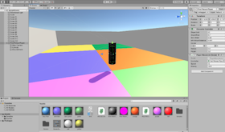
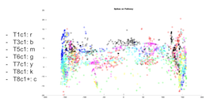
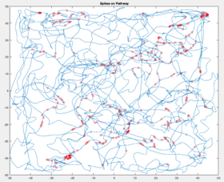
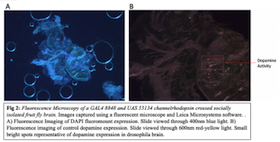
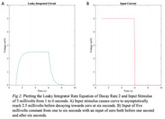
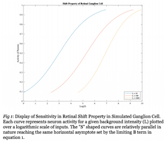
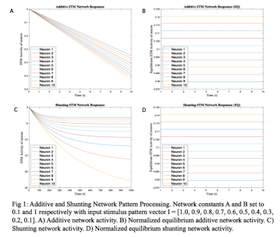
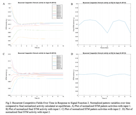
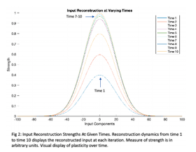

Portfolio
Full Writing Samples By Request Only
| Project | Description |
|---|---|
Office Hours Podcast |
Office Hours is a podcast which aims to facilitate an academic conversation between students and neuroscience researchers through a casual and meaningful medium. Check out more at our podcast website! |
|  Virtual Reality Expirement |
Designed a practical experiment through the Unity platform to study relocation data in virtual reality. The spatial error in relocating oneself is studied to analyze a connection between behavioral data and physiological grid cell error. Conducted in Boston University Computational Neuroscience and Vision Lab. |
|  Grid Cell Data |
Data Visualization of Physiological Grid Cell Data (Hafting et al. 2008). Expressions of physiological data provided background to further research grid cell computational models. Conducted in Boston University Computational Neuroscience and Vision Lab. |
|  Conjunctive Cell Data |
Visualization of Conjunctive Spike Data at Spiking Positions (Sargolini et al. 2006). Expressions of physiological data provided background to study spatial relocation data. Conducted in Boston University Computational Neuroscience and Vision Lab. |
 Activity and Location of BACE |
A Study of the Dileucine Motif on BACE Activity and Location. Study of amyloid plaque in scope of Alzheimer's research through a replication study of intracellular BACE expression. Academically assigned manuscript in an undergraduate cellular neuro-bio course. |
|  Alcohol Use and Social Defeat |
A Proposed Investigation of Alcohol Use in Socially Defeated Populations Utilizing the Drosophila Model. Conducted genetic crossings of Drosophila lines, analyzed behavioral assays, and produced fluorescent microscopy brain images. An academically assigned and drafted grant proposal under instruction of Dr. Kyle Gobrogge. |
| Project | Description |
|---|---|
|  CN510 Leaky-STM Circuit |
A Study of Short-Term Memory as a Leaky Integrated Circuit. This was the first simulation project conducted in a Boston University GPN computational modeling course. |
|  CN510 Retinal Shift Property |
A Study of the Retinal Ganglion Cell Shift Property. Used a feedforward shunting competitive network to analyze the adaptability of ganglion cells as a measure of background intensities and hyperpolarization. |
|  CN510 Additive and Shunting Networks |
A Study of Additive and Shunting Networks with On-Center Input patterns and Distance-Dependent Receptive Fields. |
|  CN510 Recurrent Competitive Networks |
A Study of Recurrent Competitive Networks in Analyzing Short-Term Memory Dynamics of Pattern Processing in the Presence of Signal Functions. |
|  CN510 Entorhinal Cortex Input Reconstruction Network |
A Functional Model of Plasticity in Entorhinal Cortex-Hippocampal Regions. Plastic dynamics according to reconstructed input as a measure of network error. |